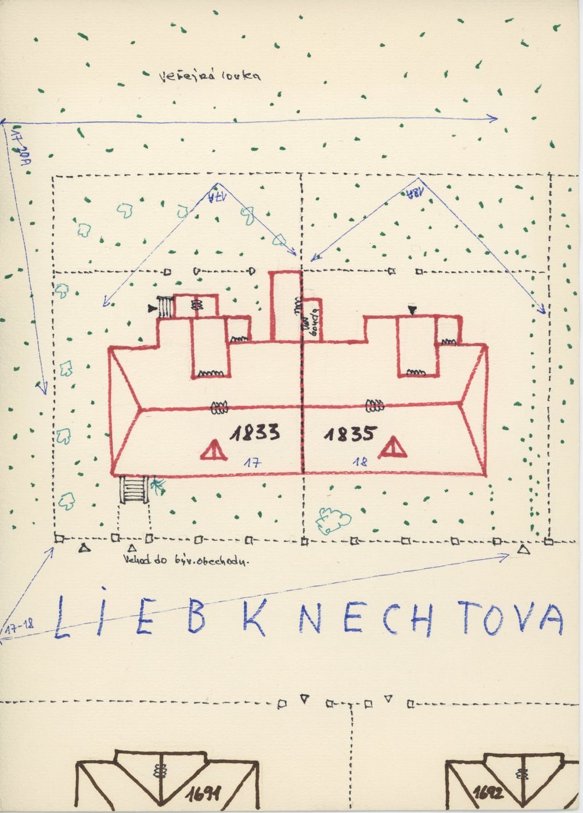
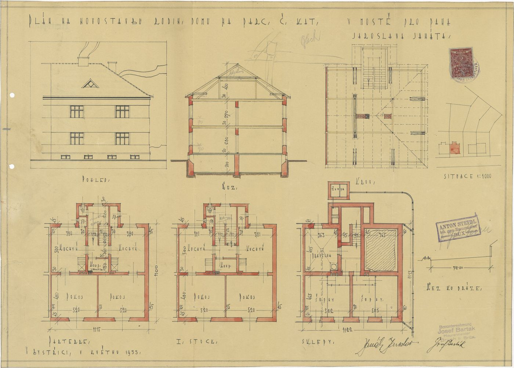
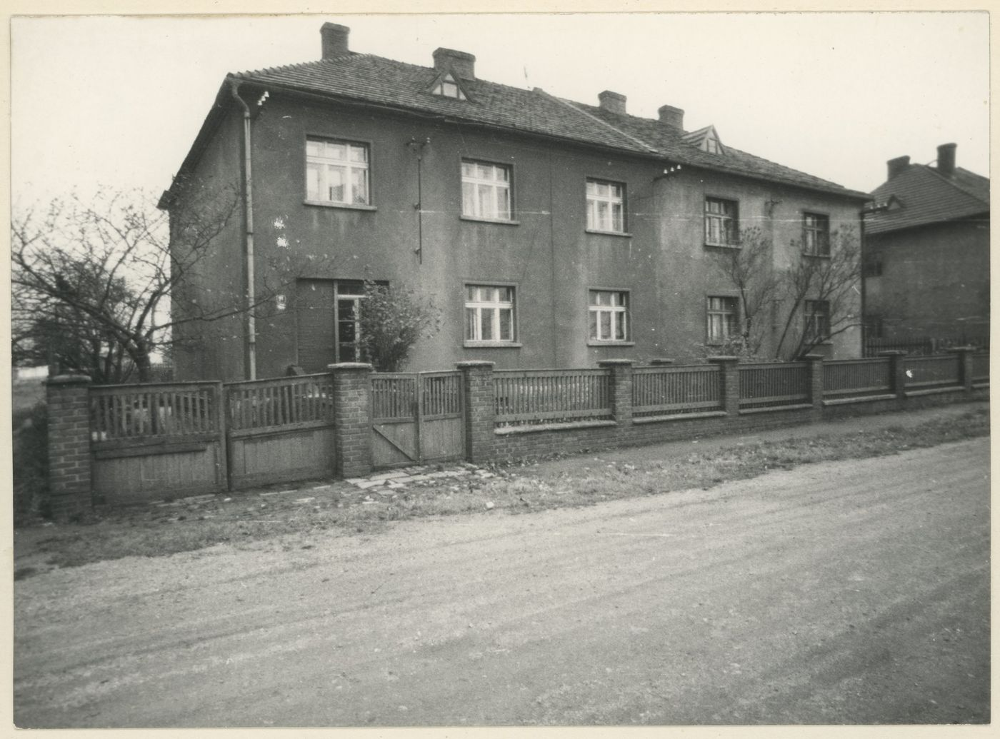
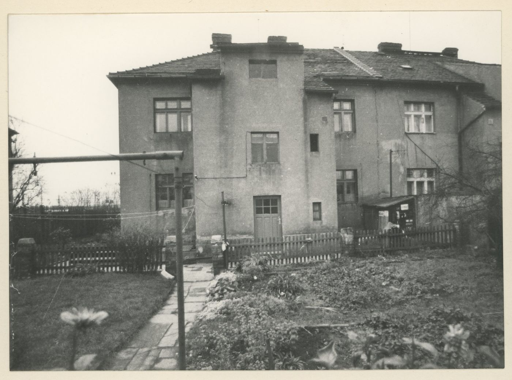
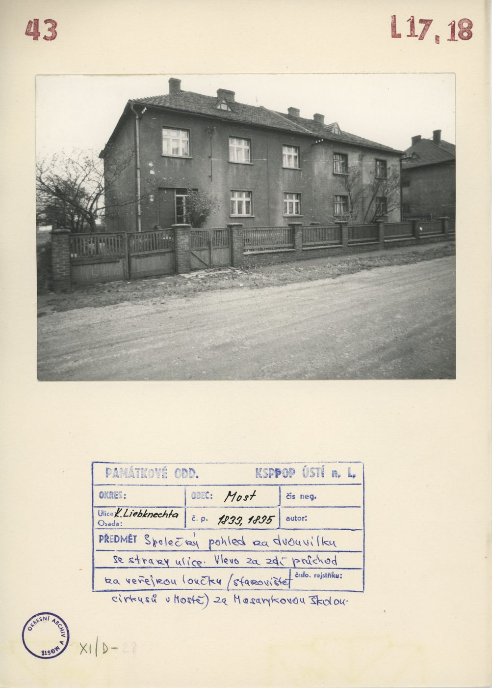
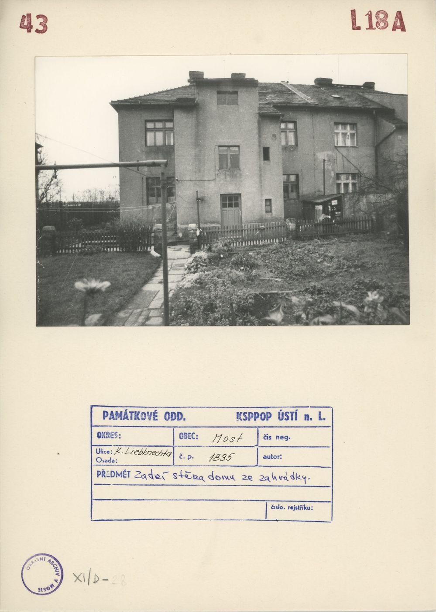
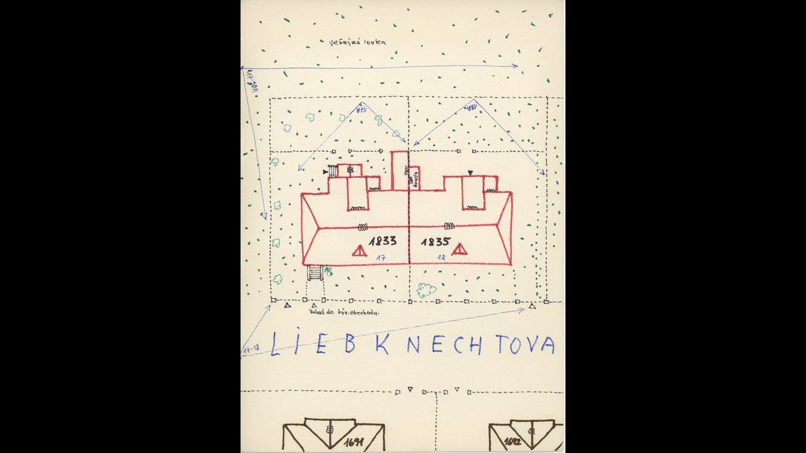
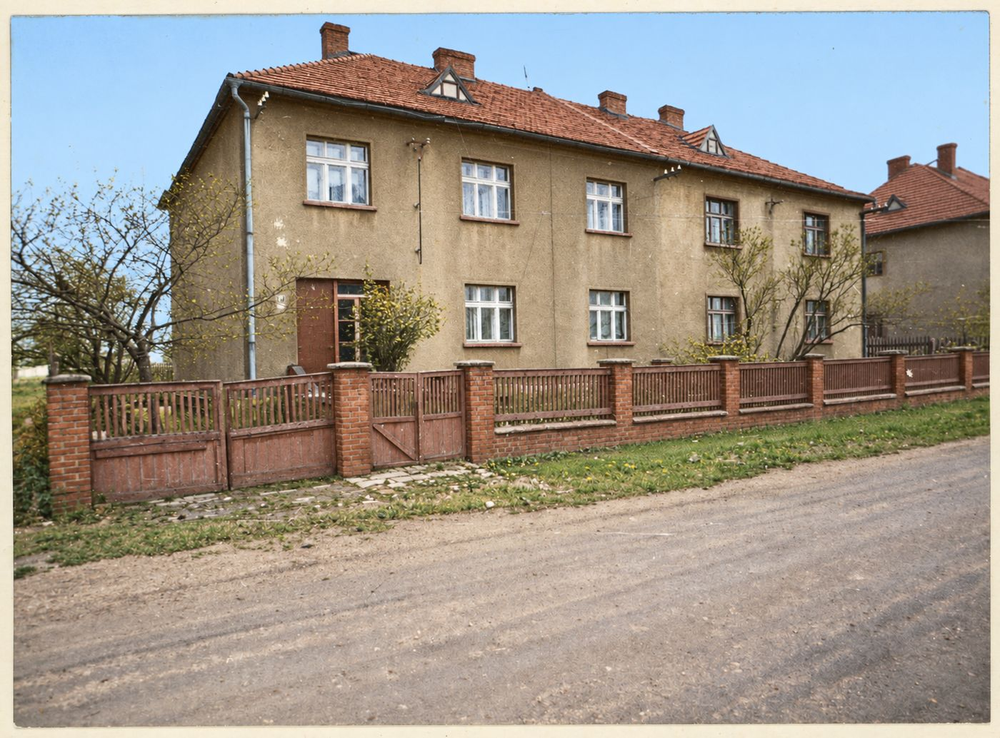

Identita domu
Severní polovina dvojdomu.
Použité prameny: plán, fotografie, skica.
Přílohy v databázi (8)
Všechny přílohy struktury 1835 v databázi Libuše, načtené 23. 10. 2026 (jen čtení) a otevřené. Kliknutím otevřete větší náhled.


plán / výkres
SHA-256 83bc2565734b…


plán / výkres
SHA-256 a3855557f3d4…


fotografie
SHA-256 ec81ccbc4a8a…


fotografie
SHA-256 7eac58d5acd0…


archivní karta
SHA-256 99f3098bfdf5…


archivní karta
SHA-256 26ebfb920d74…


odvozenina (kolorovaná / FRONT)
SHA-256 ec4ed38c26a2…


odvozenina (kolorovaná / FRONT)
SHA-256 b3a306502299…
Geometrie
| Revize geometrie | r2 |
|---|---|
| Poloha | GIS půdorys id 1567 (ulice Rudolfova) |
| Šířka průčelí | 11,86 m |
| Výška okapu | 6,50 m |
| Podlaží | 2 |
| Střecha podle pramenů | podle plánu |
| Otvory / vikýře | 8 / 1 |
| Polygonů | 213 |
| Kontrola podkroví a střechy (brána) | prošla: vlasové zásahy 3, nekryté zdivo 0,00 m², střecha nad prázdnem 0,00 m²; fasáda: passed_partial |
Otvory po fasádách (facade_evidence)
| Fasáda | Okna po podlažích | Dveře | Počítané | Hypotéza | Pramen | Poznámka |
|---|---|---|---|---|---|---|
| main | [2, 2] | 0 | 4 | 4 | photo | sklepní okénka za plotem – podle pohledu projektu |
Kontrolní pohledy


Textury
zatím bez textur
Až Codex dodá texturovaný model, objeví se v prohlížeči nahoře volba Textury (Codex).
Hypotézy
Vše níže je model_hypothesis, provisional, locked: false.
- sklepni okenka za plotem - podle pohledu projektu
- vstup ze dvora (projekt: schodiste vzadu)
- sirka GIS 11.86 x projekt 11.15
Soubory
- Geometrie čp. 1835, GLB
- Pracovní model: F:\MOST\output\rudolfova_street_claude_2026-10-23\houses\cp1835\r2\cp_1835_G_r2.blend
- Plán modelu: F:\MOST\output\rudolfova_street_claude_2026-10-23\houses\cp1835\geometry_plan.json